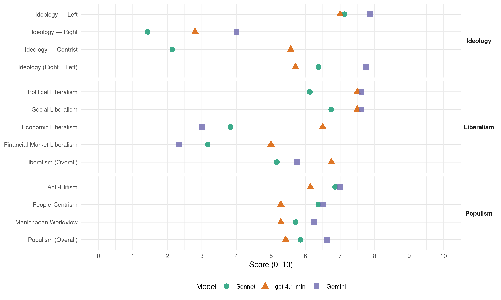

(Brazil, 2002)
manifesto_id 180240_200210
Get full text: This site shows derived annotations and short verbatim quotes only. The full manifesto text is © Manifesto Project / WZB — obtain it via manifesto-project.wzb.eu using the manifesto_id above.
Headline scores
| Dimension | Sonnet | gpt-4.1-mini | Gemini |
|---|---|---|---|
| Populism (Overall) | 5.9 | 5.4 | 6.6 |
| Anti-Elitism | 6.9 | 6.1 | 7.0 |
| People-Centrism | 6.4 | 5.3 | 6.5 |
| Manichaean Worldview | 5.7 | 5.3 | 6.2 |
| Ideology (Right − Left) | 6.4 | 5.7 | 7.8 |
| Liberalism (Overall) | 5.2 | 6.8 | 5.8 |
| Political Liberalism | 6.1 | 7.5 | 7.6 |
| Social Liberalism | 6.8 | 7.5 | 7.6 |
| Economic Liberalism | 3.8 | 6.5 | 3.0 |
| Financial-Market Liberalism | 3.2 | 5.0 | 2.3 |
Evidence per dimension
Economic Liberalism
Gemini · score 2.0 · verified · chunk 1
“substituí-la de forma radical: transformar a concentração”
Não, nosso projeto é substituí-la de forma radical: transformar a concentração em distribuição, a exclusão em inclusão, substituir a tendência
Gemini · score 4.0 · mixed · chunk 2
“reduzirá os custos das empresas brasileiras”
Uma reforma tributária que tenha esses objetivos reduzirá os custos das empresas brasileiras e aumentará sua capacidade competitiva
Gemini · score 3.0 · verified · chunk 3
“substituição de importações de bens”
inserida num contexto mais geral de estímulo ao crescimento da indústria e de substituição de importações de bens industriais. O outro ponto a ser devidamente
Gemini · score 4.0 · verified · chunk 4
“políticas de substituição de importações”
Hoje, quando até mesmo vozes governamentais subitamente se lembram da necessidade de readotar políticas de substituição de importações, é necessário considerar que essas políticas também podem ser aplicadas ao terreno da defesa.
Gemini · score 5.0 · mixed · chunk 5
“amparado na colaboração do setor privado”
Essa tarefa só pode ser desempenhada pelo Estado, amparado na colaboração do setor privado e da comunidade científica e tecnológica.
Gemini · score 5.0 · mixed · chunk 6
“princípios do mercado à configuração”
incluir, quando apropriado, o uso de princípios do mercado à configuração de políticas e instrumentos econômicos
Gemini · score 4.0 · mixed · chunk 7
“uso de princípios do mercado à configuração de políticas e instrumentos econômicos”
incluir, quando apropriado, o uso de princípios do mercado à configuração de políticas e instrumentos econômicos que busquem o desenvolvimento sustentável.
Gemini · score 3.0 · verified · chunk 8
“não serão privatizadas empresas estratégicas”
vulnerabilização do Estado brasileiro, no Governo Anthony Garotinho não serão privatizadas empresas estratégicas como Petrobras, Eletrobras, Furnas
gpt-4.1-mini · score 7.0 · verified · chunk 1
“reforma tributária que estimule o investimento produtivo e desonere a produção”
Mudar radicalmente a atual política macroeconômica, para transformá-la em instrumento de crescimento econômico, é um dos objetivos estratégicos do governo do PSB. Para isso, será preciso fazer uma reforma tributária que estimule o investimento produtivo e desonere a produção, baixar a taxa de juros e controlar a volatilidade da taxa de câmbio e expandir e reorientar o crédito, cuidando que se destine à agricultura, à indústria, ao comércio e às pequenas e médias empresas.
gpt-4.1-mini · score 7.0 · verified · chunk 2
“reforma tributária que reduza a carga abusiva de impostos”
Entre essas medidas, destacam-se: uma reforma tributária que reduza a carga abusiva de impostos sobre o investimento produtivo, a exportação e a produção; o aumento da oferta de crédito para a indústria, a agricultura, o comércio e a atividade de serviços; o assentamento assistido da população rural com o fortalecimento da agricultura familiar; o rebaixamento da elevada taxa de juros que incide sobre a economia nacional, com a conseqüente redução da dívida interna, e a obtenção de superávits na balança comercial com aumento das exportações e a adoção de uma política de substituição competitiva de importações.
gpt-4.1-mini · score 6.0 · verified · chunk 3
“política industrial brasileira será encarada como instrumento de promoção da redução das disparidades regionais”
…A política industrial brasileira será encarada, no governo do PSB como instrumento de promoção da redução das disparidades regionais. O BNDES, o BNB e a Sudene deverão implementar programas de incentivo ao desenvolvimento do setor industrial do Nordeste…
gpt-4.1-mini · score 8.0 · verified · chunk 4
“política industrial brasileira no aumento das exportações e na substituição competitiva das importações”
O foco principal da política industrial brasileira deve ser a busca do aumento das exportações e da substituição competitiva das importações.
gpt-4.1-mini · score 6.0 · verified · chunk 5
“uma reforma tributária que desonere o investimento produtivo e as exportações”
No capítulo deste documento referente à macroeconomia, o PSB apresenta suas propostas de política econômica que visam a criar um ambiente propício à retomada do desenvolvimento econômico. Sem entrar no detalhe dessas propostas, cabe aqui lembrar que elas se desdobram em quatro elementos: 1) uma reforma tributária que desonere o investimento produtivo e as exportações; 2) a queda gradativa das taxas de juros; 3) a expansão do crédito; e 4) uma política ativa de apoio às exportações…
gpt-4.1-mini · score 6.0 · verified · chunk 6
“política agropecuária, desenvolvimento rural agroecológico, reforma agrária”
…Política agropecuária, desenvolvimento rural agroecológico, reforma agrária e promoção do agro-negócio brasileiro. APRESENTAÇÃO O mundo rural brasileiro, pela escala e magnitude, apresenta uma grande diversidade regional de sistemas de uso e manejo…
gpt-4.1-mini · score 6.0 · verified · chunk 7
“utilização eficaz de instrumentos econômicos e de incentivos de mercado”
c) Utilização eficaz de instrumentos econômicos e de incentivos de mercado e outros; e d) Estabelecimento de sistemas de contabilidade ambiental e econômica integrada.
gpt-4.1-mini · score 6.0 · verified · chunk 8
“parceria com os investidores e com a sociedade na formulação das soluções”
…quatro pilares metodológicos que nortearão as ações permanentes da pasta de Energia. São eles: “agilidade e transparência das ações administrativas na concepção e implementação de políticas públicas”, “parceria com os investidores e com a sociedade na formulação das soluções”, o “desenvolvimento do setor energético em conjunto com o emprego, a engenharia e a indústria nacionais” e a “ampliação da oferta e do amplo acesso à energia”. A partir deste balizamento…
Sonnet · score 3.0 · verified · chunk 1
“reforma tributária que estimule o investimento”
será preciso fazer uma reforma tributária que estimule o investimento produtivo e desonere a produção, baixar a taxa de juros
Sonnet · score 4.0 · verified · chunk 2
“desonerar o investimento produtivo e a exportação”
Diminuir a cobrança de impostos sobre a produção nacional e desonerar o investimento produtivo e a exportação, deslocando a cobrança de impostos para consumo, a renda e a propriedade
Sonnet · score 4.0 · verified · chunk 3
“iniciativa privada será estimulada a participar”
A iniciativa privada será estimulada a participar de forma crescente do financiamento da expansão do setor
Sonnet · score 5.0 · mixed · chunk 4
“substituição competitiva das importações”
o foco principal da política industrial brasileira deve ser a busca do aumento das exportações e da substituição competitiva das importações.
Sonnet · score 5.0 · mixed · chunk 5
“abertura indiscriminada da economia”
A sobrevalorização cambial do período 1994-1998, associada à abertura indiscriminada da economia, e as altas taxas de juros que imperam no Brasil representaram sérios empecilhos
Sonnet · score 4.0 · verified · chunk 6
“incentivos de mercado e outros”
Utilização eficaz de instrumentos econômicos e de incentivos de mercado e outros; e d) Estabelecimento de sistemas de contabilidade ambiental e econômica integrada
Sonnet · score 4.0 · verified · chunk 7
“uso de princípios do mercado à configuração de políticas”
c) incluir, quando apropriado, o uso de princípios do mercado à configuração de políticas e instrumentos econômicos que busquem o desenvolvimento sustentável
Sonnet · score 4.0 · verified · chunk 8
“não serão privatizadas empresas estratégicas”
no Governo Anthony Garotinho não serão privatizadas empresas estratégicas como Petrobras, Eletrobras, Furnas, Chesf e Eletronorte
Financial-Market Liberalism
Gemini · score 1.0 · verified · chunk 1
“fim da hegemonia do capital financeiro”
crescimento do mercado interno e a expansão da massa salarial, a redução da taxa de juros e o fim da hegemonia do capital financeiro, a produção de bens
Gemini · score 3.0 · verified · chunk 2
“reforma radical do sistema financeiro internacional”
O Brasil precisa, ainda, propugnar, com mais veemência, por uma reforma radical do sistema financeiro internacional, a fim de transformá-lo
Gemini · score 2.0 · verified · chunk 3
“retenção de uma parte do capital especulativo”
Neste sentido, as propostas contidas no plano Tobin, que estipulam a retenção de uma parte do capital especulativo pelo país destinatário, que decresce na medida
Gemini · score 3.0 · verified · chunk 4
“taxa de juros de 2% ao ano”
Equivalência-produto; Linhas de crédito: Especiais com risco do Tesouro Nacional, com taxa de juros de 2% ao ano; com risco dos agentes financeiros, com taxa de juros de 2% ao ano
Gemini · score 3.0 · verified · chunk 5
“recursos do BNDES serão destinados, prioritariamente”
Na administração do PSB, os recursos do BNDES serão destinados, prioritariamente, a financiar a modernização e o aumento da eficiência
Gemini · score 2.0 · verified · chunk 7
“vítimas das taxas de juros exorbitantes e da ausência de política industrial”
Diversos setores industriais foram desnacionalizados, vítimas das taxas de juros exorbitantes e da ausência de política industrial ou de compras pelo setor público
gpt-4.1-mini · score 5.0 · mixed · chunk 1
“capital financeiro especulativo será submetido a normas que impeçam o seu comportamento errático”
O capital estrangeiro produtivo, que venha complementar a poupança nacional, aportar tecnologia, contribuir para o desenvolvimento do mercado interno e para a inserção soberana e competitiva do Brasil na economia mundial, será sempre bem vindo. Já o ingresso do capital financeiro especulativo será submetido a normas que impeçam o seu comportamento errático e imprevisível que tende a reforçar os movimentos de brusca alteração do câmbio e a agravar as crises de balanço de pagamentos.
gpt-4.1-mini · score 6.0 · verified · chunk 2
“reduzir o compulsório dos bancos, introduzindo mudanças de ordem legal”
Reduzindo gradativamente o compulsório dos bancos, introduzindo mudanças de ordem legal que aumentem a garantia do crédito e agilizem os processos judiciais de cobrança de débitos e procedendo a uma reforma do sistema financeiro que promova o aumento da concorrência no setor, o governo do PSB criará condições para a diminuição do “spread” bancário que, no Brasil, é dos mais altos do mundo.
gpt-4.1-mini · score 3.0 · verified · chunk 3
“política econômica aplicada internamente… submissão permanente aos ditames dos chamados organismos financeiros multilaterais”
…a política externa brasileira constitui um dos pontos mais negativos dos dois períodos presidenciais de Fernando Henrique Cardoso. Ela é a contrapartida, no plano externo, da política econômica aplicada internamente. Neste caso, temos a submissão permanente aos ditames dos chamados organismos financeiros multilaterais…
gpt-4.1-mini · score 6.0 · verified · chunk 4
“os recursos do BNDES serão destinados, prioritariamente, a financiar a modernização e o aumento da eficiência das empresas nacionais”
Na administração do PSB, os recursos do BNDES serão destinados, prioritariamente, a financiar a modernização e o aumento da eficiência das empresas nacionais, e não à aquisição de ativos brasileiros por estrangeiros.
gpt-4.1-mini · score 5.0 · verified · chunk 5
“os recursos do BNDES serão destinados, prioritariamente, a financiar a modernização”
Na administração do PSB, os recursos do BNDES serão destinados, prioritariamente, a financiar a modernização e o aumento da eficiência das empresas nacionais, e não à aquisição de ativos brasileiros por estrangeiros. Cabe ao governo, também, comandar a política de comércio exterior do país…
Sonnet · score 2.0 · verified · chunk 1
“capital financeiro especulativo será submetido a normas”
o ingresso do capital financeiro especulativo será submetido a normas que impeçam o seu comportamento errático e imprevisível
Sonnet · score 4.0 · verified · chunk 2
“aumento da concorrência no setor”
procedendo a uma reforma do sistema financeiro que promova o aumento da concorrência no setor, o governo do PSB criará condições para a diminuição do spread bancário
Sonnet · score 2.0 · verified · chunk 3
“capital especulativo”
Se o período histórico que hoje vivemos estabeleceu a primazia do capital especulativo, o projeto político da Amazônia deve se constituir na via da união do saber com os recursos naturais
Sonnet · score 5.0 · mixed · chunk 4
“taxa de juros de 2% ao ano”
Linhas de crédito: Especiais com risco do Tesouro Nacional, com taxa de juros de 2% ao ano; com risco dos agentes financeiros, com taxa de juros de 2% ao ano
Sonnet · score 4.0 · mixed · chunk 5
“queda gradativa das taxas de juros”
elas se desdobram em quatro elementos: 1) uma reforma tributária que desonere o investimento produtivo e as exportações; 2) a queda gradativa das taxas de juros; 3) a expansão do crédito
Sonnet · score 4.0 · verified · chunk 6
“política de crédito rural e de outros mecanismos”
que dependem da política de crédito rural e de outros mecanismos de apoio oficial, para prover sua sustentabilidade
Sonnet · score 3.0 · verified · chunk 7
“combater toda e qualquer tentativa de privatizar a água”
h) combater toda e qualquer tentativa de privatizar a água, e particularmente o PL n.º 4.147/2001, que tenciona transferir para os Estados a titularidade dos serviços de água e esgoto
Sonnet · score 4.0 · verified · chunk 8
“mecanismos legais com vistas a anular a prática de considerar os investimentos de empresas estatais”
serão desenvolvidos mecanismos legais com vistas a anular a prática de considerar os investimentos de empresas estatais de economia mista, como os da Petrobrás, Eletrobrás e suas empresas controladas, como geradores de déficit primário
Political Liberalism
Gemini · score 8.0 · verified · chunk 1
“democracia representativa se completará”
A primeira reforma política será da democracia representativa, visando à proteção do voto e da soberania popular… A democracia representativa se completará na implantação
Gemini · score 8.0 · verified · chunk 2
“solidez de suas instituições democráticas”
Postulamos que o Brasil, pela força e solidez de suas instituições democráticas, seja um fator de aprofundamento
Gemini · score 7.0 · verified · chunk 3
“defesa da ordem democrática”
Forças Armadas e democracia – A tarefa essencial das Forças Armadas no Brasil é a defesa da ordem democrática, do território e do povo brasileiro.
Gemini · score 8.0 · verified · chunk 4
“independência entre os poderes”
O PSB é contra. É preciso manter a independência entre os poderes e o direito de todos de debater os seus direitos.
Gemini · score 8.0 · verified · chunk 5
“aumento do grau de democracia eleva”
instituir, além da discriminação social, a discriminação penal, como ainda ocorre no Brasil; d) O aumento do grau de democracia eleva a consciência política e cidadã da população
Gemini · score 8.0 · verified · chunk 6
“consoante a prática democrática do”
contribuições e ao debate no curso do processo eleitoral, consoante a prática democrática do Partido Socialista Brasileiro
Gemini · score 8.0 · verified · chunk 7
“garantir a todos os cidadãos o pleno exercício dos direitos culturais”
responsabilidade do Estado garantir a todos os cidadãos o pleno exercício dos direitos culturais e o acesso às fontes da cultura nacional
Gemini · score 6.0 · verified · chunk 8
“garantir a todos os cidadãos o pleno exercício dos direitos”
estabelece como responsabilidade do Estado garantir a todos os cidadãos o pleno exercício dos direitos culturais e o acesso às fontes
gpt-4.1-mini · score 8.0 · verified · chunk 1
“O Poder Judiciário será autônomo e independente nas suas funções”
O Brasil que queremos promoverá a democratização da Justiça, assegurando a proteção jurisdicional a que têm direito todos os brasileiros, garantindo o acesso de todos ao pleito judicial. A justiça será gratuita e rápida e primará pela defesa do fraco em face do forte, do pobre em face do rico, do excluído em face do poderoso. O Poder Judiciário será autônomo e independente nas suas funções, mas, como os poderes Executivo e Legislativo, estará sujeito a mecanismos sociais de controle.
gpt-4.1-mini · score 8.0 · verified · chunk 2
“O Brasil que queremos promoverá a democratização da Justiça”
O Brasil que queremos promoverá a democratização da Justiça, assegurando a proteção jurisdicional a que têm direito todos os brasileiros, garantindo o acesso de todos ao pleito judicial.
gpt-4.1-mini · score 7.0 · verified · chunk 3
“defesa da ordem democrática, do território e do povo brasileiro”
…Forças Armadas e democracia – A tarefa essencial das Forças Armadas no Brasil é a defesa da ordem democrática, do território e do povo brasileiro. Para tanto, elas devem estar plenamente modernizadas e aparelhadas, mas também convictas da missão constitucional que lhes é atribuída…
gpt-4.1-mini · score 8.0 · verified · chunk 4
“independência do Judiciário como metapoder”
Em resumo, são estes os Objetivos básicos da Reforma que o PSB promoverá: a) realizar a independência do Judiciário como metapoder; b) propugnar pela organização democrática do Poder judiciário, dissolvendo seus nódulos corporativistas, assegurando o controle externo pela sociedade e a transparência administrativa; c) legitimar socialmente o Judiciário transferindo seu suporte político para a sociedade; d) democratizar o processo de escolha dos dirigentes dos Tribunais de Justiça; e) democratizar a composição dos Tribunais superiores.
gpt-4.1-mini · score 7.0 · verified · chunk 5
“transparência das ações e melhoria da qualidade dos serviços públicos”
Os objetivos deste programa para as atividades governamentais são: integração e maximização de ações públicas para a cidadania, transparência das ações e melhoria da qualidade dos serviços públicos. É claro que é indispensável popularizar o uso de computadores e o acesso à internet…
gpt-4.1-mini · score 8.0 · verified · chunk 6
“compromisso com o Sistema Único de Saúde universal, equânime, descentralizado”
…Radicaliza o compromisso da Candidatura Socialista com o Sistema Único de Saúde universal, equânime, descentralizado, capaz de cuidar do cotidiano do cidadão e da coletividade. Entende a saúde como produto da qualidade de vida de um povo e portanto compromete-se a priorizá-la no conjunto de ações intersetoriais…
gpt-4.1-mini · score 7.0 · verified · chunk 7
“artigo 215 da Constituição brasileira”
permitirão colocar em prática o princípio consagrado no artigo 215 da Constituição brasileira, que estabelece como responsabilidade do Estado garantir a todos os cidadãos o pleno exercício dos direitos culturais e o acesso às fontes da cultura nacional.
gpt-4.1-mini · score 7.0 · verified · chunk 8
“artigo 215 da Constituição brasileira, que estabelece como responsabilidade do Estado garantir a todos os cidadãos o pleno exercício dos direitos culturais”
…princípio consagrado no artigo 215 da Constituição brasileira, que estabelece como responsabilidade do Estado garantir a todos os cidadãos o pleno exercício dos direitos culturais e o acesso às fontes da cultura nacional, apoiando, incentivando, valorizando e difundindo as suas manifestações. 2.1 – Democratização do acesso à cultura A primeira estratégia…
Sonnet · score 6.0 · verified · chunk 1
“democracia representativa se completará”
A democracia representativa se completará na implantação progressiva dos princípios da democracia direta
Sonnet · score 6.0 · verified · chunk 2
“democracia representativa se completará na implantação”
A democracia representativa se completará na implantação progressiva dos princípios da democracia direta, fazendo efetiva a vontade constitucional da Carta de 1988, o plebiscito, o referendo e a iniciativa popular.
Sonnet · score 6.0 · verified · chunk 3
“democracia e soberania nacional são inseparáveis”
a política de defesa que propomos parte, igualmente, da convicção que temos de que democracia e soberania nacional são inseparáveis, e que quanto mais vigorosa e abrangente, no terreno social, for a institucionalidade democrática
Sonnet · score 7.0 · verified · chunk 4
“independência entre os poderes e o direito”
É preciso manter a independência entre os poderes e o direito de todos de debater os seus direitos.
Sonnet · score 6.0 · verified · chunk 5
“democratização da Justiça”
Projetos que contribuam para a agilização da tramitação processual, e num maior controle e acompanhamento social deste trabalho, são uma das condição para a democratização da Justiça.
Sonnet · score 7.0 · verified · chunk 6
“prática democrática do Partido Socialista Brasileiro”
aberto a contribuições e ao debate no curso do processo eleitoral, consoante a prática democrática do Partido Socialista Brasileiro – PSB
Sonnet · score 5.0 · verified · chunk 7
“participação da sociedade nos processos decisórios”
f) contar com a participação da sociedade nos processos decisórios, como o estabelecimento de tarifas, a definição de prioridades de investimentos
Sonnet · score 6.0 · verified · chunk 8
“ampla e efetiva participação da sociedade civil”
o respeito à diversidade étnica e cultural, o diálogo aberto e a ampla e efetiva participação da sociedade civil em todos os seus segmentos
Liberalism (Overall)
Gemini · score 5.0 · verified · chunk 1
“democracia representativa se completará”
A primeira reforma política será da democracia representativa, visando à proteção do voto e da soberania popular… A democracia representativa se completará na implantação
Gemini · score 6.0 · verified · chunk 2
“solidez de suas instituições democráticas”
Postulamos que o Brasil, pela força e solidez de suas instituições democráticas, seja um fator de aprofundamento
Gemini · score 5.0 · verified · chunk 3
“defesa da ordem democrática”
Forças Armadas e democracia – A tarefa essencial das Forças Armadas no Brasil é a defesa da ordem democrática, do território e do povo brasileiro.
Gemini · score 6.0 · verified · chunk 4
“independência entre os poderes”
O PSB é contra. É preciso manter a independência entre os poderes e o direito de todos de debater os seus direitos.
Gemini · score 6.0 · verified · chunk 5
“aumento do grau de democracia eleva”
instituir, além da discriminação social, a discriminação penal, como ainda ocorre no Brasil; d) O aumento do grau de democracia eleva a consciência política e cidadã da população
Gemini · score 7.0 · verified · chunk 6
“consoante a prática democrática do”
contribuições e ao debate no curso do processo eleitoral, consoante a prática democrática do Partido Socialista Brasileiro
Gemini · score 6.0 · verified · chunk 7
“garantir a todos os cidadãos o pleno exercício dos direitos culturais”
responsabilidade do Estado garantir a todos os cidadãos o pleno exercício dos direitos culturais e o acesso às fontes da cultura nacional
Gemini · score 5.0 · verified · chunk 8
“não serão privatizadas empresas estratégicas”
vulnerabilização do Estado brasileiro, no Governo Anthony Garotinho não serão privatizadas empresas estratégicas como Petrobras, Eletrobras, Furnas
gpt-4.1-mini · score 7.0 · verified · chunk 1
“O Poder Judiciário será autônomo e independente nas suas funções”
O Brasil que queremos promoverá a democratização da Justiça, assegurando a proteção jurisdicional a que têm direito todos os brasileiros, garantindo o acesso de todos ao pleito judicial. A justiça será gratuita e rápida e primará pela defesa do fraco em face do forte, do pobre em face do rico, do excluído em face do poderoso. O Poder Judiciário será autônomo e independente nas suas funções, mas, como os poderes Executivo e Legislativo, estará sujeito a mecanismos sociais de controle.
gpt-4.1-mini · score 7.0 · verified · chunk 2
“O Brasil que queremos promoverá a democratização da Justiça”
O Brasil que queremos promoverá a democratização da Justiça, assegurando a proteção jurisdicional a que têm direito todos os brasileiros, garantindo o acesso de todos ao pleito judicial.
gpt-4.1-mini · score 6.0 · verified · chunk 3
“defesa da ordem democrática, do território e do povo brasileiro”
…Forças Armadas e democracia – A tarefa essencial das Forças Armadas no Brasil é a defesa da ordem democrática, do território e do povo brasileiro. Para tanto, elas devem estar plenamente modernizadas e aparelhadas, mas também convictas da missão constitucional que lhes é atribuída…
gpt-4.1-mini · score 7.0 · verified · chunk 4
“O Governo do PSB promoverá a democratização da Justiça, assegurando a proteção jurisdicional a que têm direito todos os brasileiros”
O Governo do PSB promoverá a democratização da Justiça, assegurando a proteção jurisdicional a que têm direito todos os brasileiros, garantindo o acesso de todos ao pleito judicial; num regime democrático o Judiciário deve voltar -se para as conquistas sociais, ou seja, para a melhoria das condições de vida do povo.
gpt-4.1-mini · score 6.0 · verified · chunk 5
“transparência das ações e melhoria da qualidade dos serviços públicos”
Os objetivos deste programa para as atividades governamentais são: integração e maximização de ações públicas para a cidadania, transparência das ações e melhoria da qualidade dos serviços públicos. É claro que é indispensável popularizar o uso de computadores e o acesso à internet…
gpt-4.1-mini · score 7.0 · verified · chunk 6
“compromisso com o Sistema Único de Saúde universal, equânime, descentralizado”
…Radicaliza o compromisso da Candidatura Socialista com o Sistema Único de Saúde universal, equânime, descentralizado, capaz de cuidar do cotidiano do cidadão e da coletividade. Entende a saúde como produto da qualidade de vida de um povo e portanto compromete-se a priorizá-la no conjunto de ações intersetoriais…
gpt-4.1-mini · score 7.0 · verified · chunk 7
“artigo 215 da Constituição brasileira”
permitirão colocar em prática o princípio consagrado no artigo 215 da Constituição brasileira, que estabelece como responsabilidade do Estado garantir a todos os cidadãos o pleno exercício dos direitos culturais e o acesso às fontes da cultura nacional.
gpt-4.1-mini · score 7.0 · verified · chunk 8
“artigo 215 da Constituição brasileira, que estabelece como responsabilidade do Estado garantir a todos os cidadãos o pleno exercício dos direitos culturais”
…princípio consagrado no artigo 215 da Constituição brasileira, que estabelece como responsabilidade do Estado garantir a todos os cidadãos o pleno exercício dos direitos culturais e o acesso às fontes da cultura nacional, apoiando, incentivando, valorizando e difundindo as suas manifestações. 2.1 – Democratização do acesso à cultura A primeira estratégia…
Sonnet · score 4.0 · verified · chunk 1
“dependência ao capital financeiro especulativo internacional”
O endividamento e a dependência crescente ao capital financeiro especulativo internacional, consumindo nossas reservas e nossa poupança.
Sonnet · score 5.0 · verified · chunk 2
“reforma do sistema financeiro internacional”
O Brasil precisa, ainda, propugnar, com mais veemência, por uma reforma radical do sistema financeiro internacional, a fim de transformá-lo em instrumento de desenvolvimento econômico e social.
Sonnet · score 5.0 · mixed · chunk 3
“fluxos desordenados e transitórios de capitais”
O predomínio esmagador do interesse financeiro sobre o produtivo leva à situação que hoje vivemos de fluxos desordenados e transitórios de capitais, que desestabilizam economias nacionais
Sonnet · score 6.0 · verified · chunk 4
“democracia e soberania nacional são inseparáveis”
a convicção que temos de que democracia e soberania nacional são inseparáveis, e que quanto mais vigorosa e abrangente, no terreno social, for a institucionalidade democrática
Sonnet · score 6.0 · verified · chunk 5
“respeito aos direitos humanos com os rigores”
É perfeitamente possível conciliar o respeito aos direitos humanos com os rigores da repressão penal. Ignorá-los é cooptar a violência.
Sonnet · score 5.0 · verified · chunk 6
“educação pública, gratuita e de qualidade”
A educação pública, gratuita e de qualidade, é um dos eixos do projeto de governo do PSB
Sonnet · score 5.0 · mixed · chunk 7
“incentivos de mercado e outros”
c) Utilização eficaz de instrumentos econômicos e de incentivos de mercado e outros; e d) Estabelecimento de sistemas de contabilidade ambiental e econômica integrada
Sonnet · score 5.0 · verified · chunk 8
“ampla e efetiva participação da sociedade civil”
o respeito à diversidade étnica e cultural, o diálogo aberto e a ampla e efetiva participação da sociedade civil em todos os seus segmentos
Anti-Elitism
Gemini · score 8.0 · verified · chunk 1
“hegemonia de uma elite política, econômica e social”
O Estado centralizador e autoritário que conhecemos reflete a hegemonia de uma elite política, econômica e social que, à força de defender seus privilégios, impediu
Gemini · score 8.0 · verified · chunk 2
“elite comprometida com o atraso e a depredação”
O domínio local da sociedade foi, historicamente, exercido por uma elite comprometida com o atraso e a depredação, que controla a região
Gemini · score 8.0 · verified · chunk 3
“governada por uma elite que se recusa”
pelo complexo industrial militar das nações ricas, governada por uma elite que se recusa a reagir ao dominador e priorizar os interesses
Gemini · score 6.0 · verified · chunk 4
“rompendo com a lógica de submissão”
Este é o quadro que vamos reverter em nosso governo, rompendo com a lógica de submissão e dependência que tem caracterizado os últimos governos.
Gemini · score 6.0 · verified · chunk 5
“tentação do establishment de apelar para a força”
contingentes pobres, tanto maior a tentação do establishment de apelar para a força da polícia no sentido de manter a ordem
Gemini · score 7.0 · verified · chunk 6
“elite patrimonialista, conservadora, com indicadores”
entra no terceiro milênio com um perfil de Estado dominado por uma elite patrimonialista, conservadora, com indicadores de exclusão social profunda
Gemini · score 7.0 · verified · chunk 7
“governo americano, que atende os interesses das grandes corporações”
Se a União Européia e o Japão acabam de ratificar o Protocolo de Kioto, o governo americano, que atende os interesses das grandes corporações, despreocupadas com o impacto ambiental de seus mega-projetos, recusa-se a reconhecer
Gemini · score 6.0 · verified · chunk 8
“revelando o alto grau de comprometimento do governo federal com os interesses das empresas privadas”
União impôs enormes aumentos tarifários para o consumidor, revelando o alto grau de comprometimento do governo federal com os interesses das empresas privadas do setor energético e baixa preocupação com os interesses
gpt-4.1-mini · score 9.0 · verified · chunk 1
“política dos ricos, o direito dos ricos, a justiça dos ricos”
No Brasil, se tem feito, até hoje, a política dos ricos, o direito dos ricos, ajustiça dos ricos. É tempo que se faça também a dos pobres. João Mangabeira Companheiras e companheiros socialistas Nosso Partido decidiu responder à conclamação de seu patrono, e encontrou o melhor instrumento para defesa de suas teses e efetivação de seus projetos: a candidatura própria às eleições de 2002, sonho de seus reorganizadores que agora se materializa.
gpt-4.1-mini · score 7.0 · verified · chunk 2
“uma elite comprometida com o atraso e a depredação”
O domínio local da sociedade foi, historicamente, exercido por uma elite comprometida com o atraso e a depredação, que controla a região atemorizando os pequenos trabalhadores, enquanto promove o desmatamento, a erosão genética, o garimpo predatório, o narcotráfico, a biopirataria, o etnocídio de povos e línguas indígenas, o extermínio seringueiros, de pescadores tradicionais, de castanheiros e de quilombos.
gpt-4.1-mini · score 8.0 · verified · chunk 3
“governada por uma elite que se recusa a reagir ao dominador”
…Brasil do ponto de vista do atual jogo internacional de poder; assim, nos veremos como uma nação de periferia, controlada pelo poder econômico e pelo complexo industrial militar das nações ricas, governada por uma elite que se recusa a reagir ao dominador e priorizar os interesses da nação. Portanto é questão central para o nosso governo dar um corte radical na atual visão de mundo…
gpt-4.1-mini · score 7.0 · verified · chunk 4
“rompendo com a lógica de submissão e dependência”
Este é o quadro que vamos reverter em nosso governo, rompendo com a lógica de submissão e dependência que tem caracterizado os últimos governos.
gpt-4.1-mini · score 4.0 · verified · chunk 5
“o povo não agüenta mais!”
…combinara, sim, a repressão sistemática aos casos individuais, doa a quem doer, com o obstinado empenho em destruir os esquemas públicos que favorecem sua prática de forma sistêmica. O povo não agüenta mais! 5.1.5 - Expansão dos investimentos A segurança é um bem dispendioso…
gpt-4.1-mini · score 5.0 · verified · chunk 6
“um modelo econômico concentrador de renda”
…a delinqüência, tem muito mais a ver com o aprofundamento da desigualdade e do desemprego do que com o reforço policial, o que vem sendo agravado dramaticamente por um modelo econômico concentrador de renda e indiferente à ausência de perspectivas de nossa juventude. O Brasil é uma grande República Federativa…
gpt-4.1-mini · score 3.0 · verified · chunk 7
“uma minoria, cada vez mais internacionalizada”
estes recursos são apropriados por uma minoria, cada vez mais internacionalizada, enquanto os custos da poluição e da degradação do meio ambiente, muitas vezes irreversíveis, penalizam a grande maioria da população mundial.
Sonnet · score 8.0 · verified · chunk 1
“a elite tenta impor nesta eleição”
a agenda de debates que a elite tenta impor nesta eleição exclui temas estruturais, estratégicos ou de longo prazo
Sonnet · score 8.0 · verified · chunk 2
“elite comprometida com o atraso e a depredação”
O domínio local da sociedade foi, historicamente, exercido por uma elite comprometida com o atraso e a depredação, que controla a região atemorizando os pequenos trabalhadores
Sonnet · score 8.0 · verified · chunk 3
“governada por uma elite que se recusa a reagir ao dominador”
nos veremos como uma nação de periferia, controlada pelo poder econômico e pelo complexo industrial militar das nações ricas, governada por uma elite que se recusa a reagir ao dominador e priorizar os interesses da nação
Sonnet · score 6.0 · verified · chunk 4
“lógica de submissão e dependência que tem caracterizado os últimos governos”
Este é o quadro que vamos reverter em nosso governo, rompendo com a lógica de submissão e dependência que tem caracterizado os últimos governos.
Sonnet · score 5.0 · mixed · chunk 5
“governo FHC tornou-se refém dos movimentos lobistas”
Com isso, o governo FHC tornou-se refém dos movimentos lobistas dos grupos de interesse e não conseguiu implementar uma proposta global de atuação.
Sonnet · score 6.0 · verified · chunk 6
“um Estado dominado por uma elite patrimonialista”
configurou um País que entra no terceiro milênio com um perfil de Estado dominado por uma elite patrimonialista, conservadora, com indicadores de exclusão social profunda
Sonnet · score 7.0 · verified · chunk 7
“governo americano, que atende os interesses das grandes corporações”
Se a União Européia e o Japão acabam de ratificar o Protocolo de Kioto, o governo americano, que atende os interesses das grandes corporações, despreocupadas com o impacto ambiental
Sonnet · score 5.0 · verified · chunk 8
“alto grau de comprometimento do governo federal com os interesses das empresas privadas”
revelando o alto grau de comprometimento do governo federal com os interesses das empresas privadas do setor energético e baixa preocupação com os interesses dos consumidores
Ideology — Centrist
gpt-4.1-mini · score 6.0 · verified · chunk 1
“O Brasil que queremos será uma democracia social e participativa”
O Brasil que queremos será uma democracia social e participativa, recuperando a Federação e promovendo a distribuição do poder e a participação popular.
gpt-4.1-mini · score 6.0 · verified · chunk 2
“com a ajuda do povo brasileiro, construiremos uma sociedade”
Com a ajuda do povo brasileiro, construiremos uma sociedade na qual imperará a ética como valor fundamental e o trabalho como instrumento de dignidade e ascensão social.
gpt-4.1-mini · score 6.0 · verified · chunk 3
“a defesa intransigente dos interesses de nosso País”
…A Política de Defesa do governo do PSB terá, em síntese, um só objetivo: a defesa intransigente dos interesses de nosso País. A Política de Defesa A política de defesa do governo do PSB terá como ponto de partida a reconstrução e a reintrodução, na vida política brasileira, do conceito de interesse nacional…
gpt-4.1-mini · score 6.0 · verified · chunk 4
“política de defesa que propomos parte, igualmente, da convicção que temos de que democracia e soberania nacional são inseparáveis”
A política de defesa que propomos parte, igualmente, da convicção que temos de que democracia e soberania nacional são inseparáveis, e que quanto mais vigorosa e abrangente, no terreno social, for a institucionalidade democrática, mais fácil será sua manutenção e a defesa da soberania nacional.
gpt-4.1-mini · score 6.0 · verified · chunk 5
“a segurança que o PSB deseja para o Brasil é aquela que se fundamenta no conceito de segurança humana”
Segurança Pública A segurança que o PSB deseja para o Brasil é aquela que se fundamenta no conceito de segurança humana, da ONU, centrado no desenvolvimento do ser humano, e não a segurança referida às idéias de força, poder e desenvolvimento econômico tão-somente. Trata-se da segurança de todos os cidadãos e cidadãs no seu dia-a-dia…
gpt-4.1-mini · score 4.0 · verified · chunk 6
“compromisso com o Sistema Único de Saúde universal, equânime, descentralizado”
…Radicaliza o compromisso da Candidatura Socialista com o Sistema Único de Saúde universal, equânime, descentralizado, capaz de cuidar do cotidiano do cidadão e da coletividade. Entende a saúde como produto da qualidade de vida de um povo e portanto compromete-se a priorizá-la no conjunto de ações intersetoriais…
gpt-4.1-mini · score 5.0 · verified · chunk 7
“a sociedade como continuação da natureza”
O Governo do PSB, em coerência com uma visão da sociedade como continuação da natureza, promoverá o fortalecimento institucional da área de meio-ambiente, conceituando-a como necessidade social prioritária.
Sonnet · score 2.0 · verified · chunk 1
“união de todos os brasileiros”
a proposta do PSB é de união de todos os brasileiros em torno desse projeto de um novo Brasil
Sonnet · score 2.0 · verified · chunk 3
“interesses de nosso povo”
A política externa brasileira será a projeção internacional dos interesses de nosso povo
Sonnet · score 2.0 · verified · chunk 4
“participação coordenada do Estado, da comunidade científica”
Exige a participação coordenada do Estado, da comunidade científica e tecnológica, das empresas e dos trabalhadores.
Sonnet · score 3.0 · verified · chunk 5
“inserção competitiva e soberana da indústria brasileira”
em prol da inserção competitiva e soberana da indústria brasileira num mundo cada vez mais globalizado.
Sonnet · score 2.0 · verified · chunk 6
“segurança é igual a mais ação, mais investimentos”
A fórmula será a mesma adotada no Rio de Janeiro: segurança é igual a mais ação, mais investimentos, mais igualdade, e menos leis.
Sonnet · score 2.0 · verified · chunk 7
“controle da sociedade sob a gestão eficiente”
c) garantir o controle da sociedade sob a gestão eficiente das empresas estaduais e dos órgãos municipais de saneamento
Sonnet · score 2.0 · verified · chunk 8
“parceria com os investidores e com a sociedade”
parceria com os investidores e com a sociedade na formulação das soluções
Ideology — Left
Gemini · score 9.0 · verified · chunk 1
“transformar a concentração em distribuição”
Não, nosso projeto é substituí-la de forma radical: transformar a concentração em distribuição, a exclusão em inclusão
Gemini · score 9.0 · verified · chunk 2
“ditadura financeira dos organismos internacionais”
pelo atual modelo de poder do capital financeiro, imposto pela globalização neoliberal sob o controle da ditadura financeira dos organismos internacionais operada através do FMI.
Gemini · score 8.0 · verified · chunk 3
“primazia do capital especulativo”
Se o período histórico que hoje vivemos estabeleceu a primazia do capital especulativo, o projeto político da Amazônia deve se constituir
Gemini · score 8.0 · verified · chunk 4
“prerrogativa do capital”
Não há justiça se o Judiciário é instrumento da luta de classes em defesa da propriedade; se o direito é tão-só uma prerrogativa do capital.
Gemini · score 6.0 · verified · chunk 5
“modelo econômico concentrador de renda”
agravado dramaticamente por um modelo econômico concentrador de renda e indiferente à ausência de perspectivas
Gemini · score 8.0 · verified · chunk 6
“modelo econômico concentrador de renda”
agravado dramaticamente por um modelo econômico concentrador de renda e indiferente à ausência de perspectivas
Gemini · score 8.0 · verified · chunk 7
“no bojo da onda privatizadora e flexibilizadora do neoliberalismo”
Na prática, essa MP, no bojo da onda privatizadora e flexibilizadora do neoliberalismo, inviabilizou uma das mais importantes inovações
Gemini · score 7.0 · verified · chunk 8
“A política cultural do governo socialista deverá”
modo de expressão na sua projeção internacional. A política cultural do governo socialista deverá, assim, permitir a todos os brasileiros cultivar sua capacidade
gpt-4.1-mini · score 9.0 · verified · chunk 1
“transformar a concentração em distribuição, a exclusão em inclusão”
Nosso projeto é substituí-la de forma radical: transformar a concentração em distribuição, a exclusão em inclusão, substituir a tendência centralizadora e autoritária da União pela construção de um verdadeiro e legítimo pacto federativo.
gpt-4.1-mini · score 7.0 · verified · chunk 2
“combater a corrupção em todos os seus escalões”
O Brasil que queremos combaterá a corrupção em todos os seus escalões, será vigilante na defesa do erário e do interesse público e implacável no combate aos crimes de ‘colarinho branco’, no combate a toda sorte de privilégios, na guerra à impunidade, que corrói a confiança do povo na democracia.
gpt-4.1-mini · score 8.0 · verified · chunk 3
“uma cultura que subordine a economia aos interesses da nação, de seu povo e de sua cultura”
…o projeto político da Amazônia deve se constituir na via da união do saber com os recursos naturais para construir uma cultura que subordine a economia aos interesses da nação, de seu povo e de sua cultura, e principalmente à construção de uma sociedade fundamentada na justiça…
gpt-4.1-mini · score 8.0 · verified · chunk 4
“democratização da Justiça, assegurando a proteção jurisdicional a que têm direito todos os brasileiros”
O Governo do PSB promoverá a democratização da Justiça, assegurando a proteção jurisdicional a que têm direito todos os brasileiros, garantindo o acesso de todos ao pleito judicial; num regime democrático o Judiciário deve voltar -se para as conquistas sociais, ou seja, para a melhoria das condições de vida do povo.
gpt-4.1-mini · score 5.0 · verified · chunk 5
“o aprofundamento da desigualdade e do desemprego do que com o reforço policial”
…aumento dos crimes de rua, a delinqüência, tem muito mais a ver com o aprofundamento da desigualdade e do desemprego do que com o reforço policial, o que vem sendo agravado dramaticamente por um modelo econômico concentrador de renda e indiferente à ausência de perspectivas de nossa juventude…
gpt-4.1-mini · score 6.0 · verified · chunk 6
“modelo econômico concentrador de renda e indiferente à ausência de perspectivas”
…a delinqüência, tem muito mais a ver com o aprofundamento da desigualdade e do desemprego do que com o reforço policial, o que vem sendo agravado dramaticamente por um modelo econômico concentrador de renda e indiferente à ausência de perspectivas de nossa juventude…
gpt-4.1-mini · score 6.0 · verified · chunk 7
“o governo do PSB solicitará ao Congresso Nacional a recuperação”
O Governo do PSB solicitará ao Congresso Nacional a recuperação, para discussão por toda a sociedade, dos textos originais da Lei dos Crimes Ambientais vetados por FHC para atender às pressões dos grandes proprietários, dos madeireiros, das mineradoras e de grupos internacionais.
Sonnet · score 9.0 · verified · chunk 1
“eliminar a tirania do capital financeiro”
o compromisso com o desenvolvimento…a decisão de eliminar a tirania do capital financeiro e superar nossa condição de sociedade periférica
Sonnet · score 9.0 · verified · chunk 2
“redução das desigualdades sociais sob todas as suas formas”
A lógica de mercado será alterada pela ação do Estado, visando a busca de um maior equilíbrio nas relações entre o capital e o trabalho, a geração de emprego e de renda e a redução das desigualdades sociais sob todas as suas formas.
Sonnet · score 8.0 · verified · chunk 3
“redução das desigualdades regionais”
A luta pela redução das desigualdades regionais no Nordeste forçou a intervenção do poder central no fim dos anos 50
Sonnet · score 6.0 · verified · chunk 4
“democratizar em larga escala a propriedade da terra”
Reforma agrária, para nós, remete à decisão política de democratizar em larga escala a propriedade da terra, tendo em vista constituir uma ampla e viável rede de pequenas e médias propriedades
Sonnet · score 6.0 · verified · chunk 5
“reforma agrária que em tempo hábil distribua terras”
exigindo que se defina e aplique uma verdadeira reforma agrária que em tempo hábil distribua terras em qualidade e quantidade suficiente e garanta condições produtivas
Sonnet · score 6.0 · verified · chunk 6
“modelo econômico concentrador de renda”
tem muito mais a ver com o aprofundamento da desigualdade e do desemprego do que com o reforço policial, o que vem sendo agravado dramaticamente por um modelo econômico concentrador de renda e indiferente à ausência de perspectivas de nossa juventude
Sonnet · score 7.0 · verified · chunk 7
“contrário a tentativas de privatização da Previdência Social”
O PSB declara-se francamente contrário a tentativas de privatização da Previdência Social, objetivo que está embutido na omissão e no descaso com que o governo neoliberal
Sonnet · score 6.0 · verified · chunk 8
“política cultural do governo socialista”
A política cultural do governo socialista deverá, assim, permitir a todos os brasileiros cultivar sua capacidade de criação
Ideology (Right − Left)
Gemini · score 9.0 · verified · chunk 1
“transformar a concentração em distribuição”
Não, nosso projeto é substituí-la de forma radical: transformar a concentração em distribuição, a exclusão em inclusão
Gemini · score 9.0 · verified · chunk 2
“ditadura financeira dos organismos internacionais”
pelo atual modelo de poder do capital financeiro, imposto pela globalização neoliberal sob o controle da ditadura financeira dos organismos internacionais operada através do FMI.
Gemini · score 8.0 · verified · chunk 3
“primazia do capital especulativo”
Se o período histórico que hoje vivemos estabeleceu a primazia do capital especulativo, o projeto político da Amazônia deve se constituir
Gemini · score 8.0 · verified · chunk 4
“prerrogativa do capital”
Não há justiça se o Judiciário é instrumento da luta de classes em defesa da propriedade; se o direito é tão-só uma prerrogativa do capital.
Gemini · score 6.0 · verified · chunk 5
“modelo econômico concentrador de renda”
agravado dramaticamente por um modelo econômico concentrador de renda e indiferente à ausência de perspectivas
Gemini · score 8.0 · verified · chunk 6
“modelo econômico concentrador de renda”
agravado dramaticamente por um modelo econômico concentrador de renda e indiferente à ausência de perspectivas
Gemini · score 8.0 · verified · chunk 7
“no bojo da onda privatizadora e flexibilizadora do neoliberalismo”
Na prática, essa MP, no bojo da onda privatizadora e flexibilizadora do neoliberalismo, inviabilizou uma das mais importantes inovações
Gemini · score 6.0 · verified · chunk 8
“A política cultural do governo socialista deverá”
modo de expressão na sua projeção internacional. A política cultural do governo socialista deverá, assim, permitir a todos os brasileiros cultivar sua capacidade
gpt-4.1-mini · score 7.0 · verified · chunk 1
“Nossos compromissos são com os pobres; pretendemos organizá-los, pretendemos representá-los”
Nossos compromissos são com os pobres; pretendemos organizá-los, pretendemos representá-los. Por isso nosso projeto não é modificar a política neoliberal conservadora que começou a ser implantada neste país pelo primeiro Fernando, e que foi consolidada a partir de 1994.
gpt-4.1-mini · score 6.0 · verified · chunk 2
“uma elite comprometida com o atraso e a depredação”
O domínio local da sociedade foi, historicamente, exercido por uma elite comprometida com o atraso e a depredação, que controla a região atemorizando os pequenos trabalhadores, enquanto promove o desmatamento, a erosão genética, o garimpo predatório, o narcotráfico, a biopirataria, o etnocídio de povos e línguas indígenas, o extermínio seringueiros, de pescadores tradicionais, de castanheiros e de quilombos.
gpt-4.1-mini · score 7.0 · verified · chunk 3
“defesa intransigente dos interesses de nosso País”
…A Política de Defesa do governo do PSB terá, em síntese, um só objetivo: a defesa intransigente dos interesses de nosso País. A Política de Defesa A política de defesa do governo do PSB terá como ponto de partida a reconstrução e a reintrodução, na vida política brasileira, do conceito de interesse nacional…
gpt-4.1-mini · score 6.0 · verified · chunk 4
“democratização da Justiça, assegurando a proteção jurisdicional a que têm direito todos os brasileiros”
O Governo do PSB promoverá a democratização da Justiça, assegurando a proteção jurisdicional a que têm direito todos os brasileiros, garantindo o acesso de todos ao pleito judicial; num regime democrático o Judiciário deve voltar -se para as conquistas sociais, ou seja, para a melhoria das condições de vida do povo.
gpt-4.1-mini · score 5.0 · verified · chunk 5
“o povo não agüenta mais!”
…combinara, sim, a repressão sistemática aos casos individuais, doa a quem doer, com o obstinado empenho em destruir os esquemas públicos que favorecem sua prática de forma sistêmica. O povo não agüenta mais! 5.1.5 - Expansão dos investimentos A segurança é um bem dispendioso…
gpt-4.1-mini · score 4.0 · verified · chunk 6
“compromisso com o Sistema Único de Saúde universal, equânime, descentralizado”
…Radicaliza o compromisso da Candidatura Socialista com o Sistema Único de Saúde universal, equânime, descentralizado, capaz de cuidar do cotidiano do cidadão e da coletividade. Entende a saúde como produto da qualidade de vida de um povo e portanto compromete-se a priorizá-la no conjunto de ações intersetoriais…
gpt-4.1-mini · score 5.0 · verified · chunk 7
“O Governo do PSB solicitará ao Congresso Nacional a recuperação”
O Governo do PSB solicitará ao Congresso Nacional a recuperação, para discussão por toda a sociedade, dos textos originais da Lei dos Crimes Ambientais vetados por FHC para atender às pressões dos grandes proprietários, dos madeireiros, das mineradoras e de grupos internacionais.
Sonnet · score 8.0 · verified · chunk 1
“recolocar o socialismo na ordem do dia”
para defender a humanidade, precisamos superar esta forma de organização social e recolocar o socialismo na ordem do dia
Sonnet · score 8.0 · verified · chunk 2
“lógica do mercado nos últimos anos aprofundou os desequilíbrios”
A lógica do mercado nos últimos anos aprofundou os desequilíbrios sociais e regionais, contribuindo para a formação de enormes diferenciais de renda e comprometendo a oferta e demanda de bens e serviços essenciais.
Sonnet · score 8.0 · verified · chunk 3
“subordine a economia aos interesses da nação”
o projeto político da Amazônia deve se constituir na via da união do saber com os recursos naturais para construir uma cultura que subordine a economia aos interesses da nação, de seu povo e de sua cultura
Sonnet · score 5.0 · verified · chunk 4
“opção do governo do PSB é pela agricultura familiar”
a opção do governo do PSB é pela agricultura familiar, cujas vantagens são evidentes: tornando-se o setor mais homogêneo, sua produtividade média tende a ser maior
Sonnet · score 5.0 · verified · chunk 5
“reforma agrária que em tempo hábil distribua terras”
exigindo que se defina e aplique uma verdadeira reforma agrária que em tempo hábil distribua terras em qualidade e quantidade suficiente
Sonnet · score 5.0 · verified · chunk 6
“Candidatura Socialista com o Sistema Único de Saúde”
Radicaliza o compromisso da Candidatura Socialista com o Sistema Único de Saúde universal, equânime, descentralizado, capaz de cuidar do cotidiano do cidadão
Sonnet · score 7.0 · verified · chunk 7
“onda privatizadora e flexibilizadora do neoliberalismo”
essa MP, no bojo da onda privatizadora e flexibilizadora do neoliberalismo, inviabilizou uma das mais importantes inovações da Lei de Crimes Ambientais
Sonnet · score 5.0 · verified · chunk 8
“política cultural do governo socialista”
A política cultural do governo socialista deverá, assim, permitir a todos os brasileiros cultivar sua capacidade de criação
Ideology — Right
Gemini · score 4.0 · verified · chunk 8
“defesa da identidade nacional brasileira”
Mas a política cultural serve a uma finalidade bem maior: ela é um dos instrumentos centrais na defesa da identidade nacional brasileira. Partindo desse ponto
gpt-4.1-mini · score 3.0 · verified · chunk 1
“rejeitamos o projeto de criação da Alca, e no lugar dele proporemos a crescente integração sul-americana”
O Brasil que queremos rejeita a estagnação econômica. […] Rejeitamos o projeto de criação da Alca, e no lugar dele proporemos a crescente integração sul-americana. Rejeitaremos a instalação de bases estrangeiras em nosso território, assegurando que Alcântara continue a sediar o programa espacial brasileiro.
gpt-4.1-mini · score 3.0 · verified · chunk 2
“um país soberano, capaz de defender seus interesses”
O Brasil que queremos é um país soberano, capaz de defender seus interesses com vigor, de aumentar sua presença na cena internacional, fortalecendo o Mercosul e agindo como um pólo de organização e de aglutinação da América do Sul, sem pretensões hegemônicas.
gpt-4.1-mini · score 3.0 · verified · chunk 3
“defender a Amazônia do atual jogo de poder”
…defender a Amazônia do atual jogo de poder, que deixa a nação indefesa diante da ameaça de apropriação de seu patrimônio econômico e natural. Como já dissemos, essa nova aliança do saber com a natureza para promover o desenvolvimento defensivo da Amazônia…
gpt-4.1-mini · score 3.0 · verified · chunk 4
“não pode ser interpretada como uma tentativa de obtenção de uma superioridade brasileira no terreno militar”
Da mesma forma, o incentivo a uma política de produção nacional de armamentos não pode ser interpretada como uma tentativa de obtenção de uma superioridade brasileira no terreno militar em plano regional.
gpt-4.1-mini · score 2.0 · verified · chunk 7
“defesa da identidade nacional brasileira”
proteger e estimular a cultura brasileira é proteger nossa consciência nacional e nosso modo de expressão na sua projeção internacional.
Sonnet · score 1.0 · verified · chunk 1
“soberania nacional e nosso direito”
Forças armadas modernas e eficientes são fundamentais para garantir a soberania nacional e nosso direito de participar de forma independente
Sonnet · score 1.0 · verified · chunk 2
“soberania de 56% do território nacional”
A primeira é a defesa da soberania de 56% do território nacional, e a segunda, conseguir meios operacionais próprios que permitam ao Brasil desenvolver um projeto econômico autônomo
Sonnet · score 2.0 · verified · chunk 3
“defesa de nossa soberania”
lutamos para tirar o Brasil do caminho da submissão e colocá-lo na trajetória que fará com que ele recupere o controle sobre seu futuro. A política externa brasileira, no Governo Anthony Garotinho, terá, em síntese, um só objetivo: a defesa intransigente dos interesses de nosso País
Sonnet · score 2.0 · verified · chunk 4
“defesa de nossa soberania”
de modo a manter e a reforçar seus instrumentos de dominação de que resulta o aumento de nossa dependência tecnológica e operacional, com evidentes limitações para a defesa de nossa soberania.
Sonnet · score 1.0 · verified · chunk 6
“drogas, armas e munição, crime organizado”
O Governo Federal tem muito a fazer, sobretudo com relação às suas incumbências específicas, até hoje inexplicavelmente negligenciadas: drogas, armas e munição, crime organizado, lavagem de dinheiro
Sonnet · score 1.0 · verified · chunk 7
“oposição firme a todos os tipos de xenofobia, racismo”
b) oposição firme a todos os tipos de xenofobia, racismo, massacres e extermínio das etnias
Sonnet · score 2.0 · verified · chunk 8
“defesa da identidade nacional brasileira”
ela é um dos instrumentos centrais na defesa da identidade nacional brasileira. Partindo desse ponto de vista, política cultural é questão de estado
Manichaean Worldview
Gemini · score 7.0 · verified · chunk 1
“pobreza de muitos que é o preço da riqueza de poucos”
disponibilidade de recursos naturais e a persistência de flagelos sociais graves como a pobreza de muitos que é o preço da riqueza de poucos, a fome e o desemprego
Gemini · score 7.0 · verified · chunk 2
“ditadura financeira dos organismos internacionais”
pelo atual modelo de poder do capital financeiro, imposto pela globalização neoliberal sob o controle da ditadura financeira dos organismos internacionais operada através do FMI.
Gemini · score 8.0 · verified · chunk 3
“ditadura financeira dos organismos internacionais”
apoiadas pelo atual modelo de poder do capital financeiro, imposto pela globalização neoliberal sob o controle da ditadura financeira dos organismos internacionais operada através do FMI.
Gemini · score 6.0 · verified · chunk 4
“um verdadeiro ato de lesa-pátria”
está sendo inexplicavelmente entregue aos Estados Unidos, com a aceitação, pelo governo brasileiro, de cláusulas que ferem nossa soberania e nossa dignidade, e contrariam o interesse nacional. Trabalharemos para que o Congresso Nacional não homologue esse Convênio, que é um verdadeiro ato de lesa-pátria.
Gemini · score 5.0 · verified · chunk 5
“O povo não agüenta mais!”
destruir os esquemas públicos que favorecem sua prática de forma sistêmica. O povo não agüenta mais!
Gemini · score 5.0 · verified · chunk 6
“perverso de desmantelamento, tanto pela”
Públicas Federais vêm sendo alvo de um processo perverso de desmantelamento, tanto pela falta de investimentos
Gemini · score 7.0 · verified · chunk 7
“recursos são apropriados por uma minoria, cada vez mais internacionalizada, enquanto os custos da poluição e da degradação do meio ambiente, muitas vezes irreversíveis, penalizam a grande maioria”
uma conclusão impõe-se: estes recursos são apropriados por uma minoria, cada vez mais internacionalizada, enquanto os custos da poluição e da degradação do meio ambiente, muitas vezes irreversíveis, penalizam a grande maioria da população mundial.
Gemini · score 5.0 · verified · chunk 8
“racionamento de energia elétrica cômodo e lucrativo para alguns dos agentes privados”
responsável por uma crise energética sem precedentes no País, forçando um racionamento de energia elétrica cômodo e lucrativo para alguns dos agentes privados, mas de graves impactos
gpt-4.1-mini · score 7.0 · verified · chunk 1
“A face mais evidente da crise: as pessoas já sabem que é preciso mudar”
Eis a face mais evidente da crise: as pessoas já sabem que é preciso mudar, mas ainda não sabem como e para onde mudar. A necessidade de transformar as circunstâncias vigentes é clara, mas o caminho para isso permanece indefinido.
gpt-4.1-mini · score 6.0 · verified · chunk 2
“uma elite que se recusa a reagir ao dominador”
assim, nos veremos como uma nação de periferia, controlada pelo poder econômico e pelo complexo industrial militar das nações ricas, governada por uma elite que se recusa a reagir ao dominador e priorizar os interesses da nação.
gpt-4.1-mini · score 7.0 · verified · chunk 3
“a ditadura financeira dos organismos internacionais operada através do FMI”
…modelo de poder do capital financeiro, imposto pela globalização neoliberal sob o controle da ditadura financeira dos organismos internacionais operada através do FMI. Se o período histórico que hoje vivemos estabeleceu a primazia do capital especulativo…
gpt-4.1-mini · score 5.0 · verified · chunk 4
“instrumentalização do Judiciário, a serviço de um sistema de dominação conservador”
Fixar-se no problema técnico, e ignorar o político, significa instrumentalizar o Judiciário, a serviço de um sistema de dominação conservador de uma justiça seletiva, que perpetua as desigualdades as mais iníquas.
gpt-4.1-mini · score 4.0 · verified · chunk 5
“a luta contra o crime e a violência interessa a todas as pessoas e segmentos sociais”
…a luta contra o crime e a violência interessa a todas as pessoas e segmentos sociais, implicando a necessidade de conjugação de medidas de prevenção e repressão policial-criminal com medidas não-policiais de “prevenção primária”, desenvolvidas pelos governos federal, estadual e municipal e pela sociedade civil…
gpt-4.1-mini · score 4.0 · verified · chunk 6
“elite patrimonialista, conservadora, com indicadores de exclusão social profunda”
…Estado dominado por uma elite patrimonialista, conservadora, com indicadores de exclusão social profunda a requerer urgentes medidas de enfrentamento e reversão deste cenário. A política sócio-econômica implementada na última década, pelo governo FHC, fortaleceu a característica acima descrita…
gpt-4.1-mini · score 4.0 · verified · chunk 7
“governo americano, que atende os interesses das grandes corporações”
o governo americano, que atende os interesses das grandes corporações, despreocupadas com o impacto ambiental de seus mega-projetos, recusa-se a reconhecer este importante instrumento da preservação do meio ambiente em escala planetária.
Sonnet · score 6.0 · verified · chunk 1
“a política dos ricos…a dos pobres”
se tem feito, até hoje, a política dos ricos, o direito dos ricos, a justiça dos ricos. É tempo que se faça também a dos pobres.
Sonnet · score 7.0 · verified · chunk 2
“defesa do fraco em face do forte”
A justiça será gratuita e rápida e primará pela defesa do fraco em face do forte, do pobre em face do rico, do excluído em face do poderoso.
Sonnet · score 7.0 · verified · chunk 3
“forças políticas de pensamento antinacional”
O maior obstáculo para o desenvolvimento desse novo paradigma de sociedade brasileira a partir da Amazônia são as forças políticas de pensamento antinacional, que nos últimos anos controlaram as instituições
Sonnet · score 5.0 · verified · chunk 4
“proteção do fraco em face do forte”
a finalidade do Judiciário é a realização do direito, a proteção do fraco em face do forte, e jamais a legitimação do poder arbitrário ou faccioso contra os excluídos
Sonnet · score 3.0 · mixed · chunk 5
“O povo não agüenta mais!”
Um governo decidido realmente a enfrentar esse mal terá que combinar, sim, a repressão sistemática aos casos individuais, doa a quem doer… O povo não agüenta mais!
Sonnet · score 5.0 · verified · chunk 6
“cumplicidade, de vários governos, com práticas de cunho predatório”
as notórias deficiências institucionais, a cumplicidade, de vários governos, com práticas de cunho predatório, a ausência de prioridade na ampliação da infra-estrutura da área ambiental
Sonnet · score 6.0 · verified · chunk 7
“recursos são apropriados por uma minoria”
estes recursos são apropriados por uma minoria, cada vez mais internacionalizada, enquanto os custos da poluição e da degradação do meio ambiente, muitas vezes irreversíveis, penalizam a grande maioria
Sonnet · score 4.0 · verified · chunk 8
“privatização foi, na grande maioria dos casos, cercada de erros”
a privatização foi, na grande maioria dos casos, cercada de erros, e não atendeu à expectativa da sociedade nacional de ter menores tarifas
People-Centrism
Gemini · score 8.0 · verified · chunk 1
“contribuição de nosso povo”
E assim, esse Programa deverá estar sempre aberto à revisão, colhendo a todo momento a contribuição de nosso povo.
Gemini · score 8.0 · verified · chunk 2
“povo brasileiro, o verdadeiro devedor”
povo brasileiro, o verdadeiro devedor. Também a dívida interna, ainda que
Gemini · score 7.0 · verified · chunk 3
“alicerçado nas necessidades de seu povo”
e de defender sua soberania, dentro de um modelo de desenvolvimento alicerçado nas necessidades de seu povo. O maior obstáculo para o desenvolvimento
Gemini · score 7.0 · verified · chunk 4
“melhoria das condições de vida do povo”
o Judiciário deve voltar -se para as conquistas sociais, ou seja, para a melhoria das condições de vida do povo.
Gemini · score 5.0 · verified · chunk 5
“esquemas de sangria do dinheiro do povo”
praticados por pessoas “de qualidade”, poderíamos contrapor “crime organizado convencional” a “crime organizado não-convencional” (por exemplo, os crimes do “colarinho branco”, os esquemas de sangria do dinheiro do povo, as fraudes, os golpes
Gemini · score 6.0 · verified · chunk 6
“patrimônio social do povo brasileiro”
zelar permanentemente pelo SUS como patrimônio social do povo brasileiro, conquistado na Carta Constitucional
Gemini · score 6.0 · verified · chunk 7
“comprometido com os anseios da sociedade brasileira”
exige de um governo comprometido com os anseios da sociedade brasileira. a) Rigorosa observância dos postulados da sustentabilidade
Gemini · score 5.0 · verified · chunk 8
“garantir a todos os cidadãos o pleno exercício dos direitos culturais”
estabelece como responsabilidade do Estado garantir a todos os cidadãos o pleno exercício dos direitos culturais e o acesso às fontes da cultura nacional
gpt-4.1-mini · score 8.0 · verified · chunk 1
“pretendemos organizá-los, pretendemos representá-los”
Nossos compromissos são com os pobres; pretendemos organizá-los, pretendemos representá-los. Por isso nosso projeto não é modificar a política neoliberal conservadora que começou a ser implantada neste país pelo primeiro Fernando, e que foi consolidada a partir de 1994.
gpt-4.1-mini · score 6.0 · verified · chunk 2
“com a ajuda do povo brasileiro, construiremos uma sociedade”
Com a ajuda do povo brasileiro, construiremos uma sociedade na qual imperará a ética como valor fundamental e o trabalho como instrumento de dignidade e ascensão social.
gpt-4.1-mini · score 7.0 · verified · chunk 3
“dentro de um modelo de desenvolvimento alicerçado nas necessidades de seu povo”
…dará ao Brasil condições cada vez melhores de atuar no cenário internacional e de defender sua soberania, dentro de um modelo de desenvolvimento alicerçado nas necessidades de seu povo. O maior obstáculo para o desenvolvimento desse novo paradigma de sociedade brasileira a partir da Amazônia são as forças políticas de pensamento antinacional…
gpt-4.1-mini · score 6.0 · verified · chunk 4
“quem defende o país e suas instituições é o povo”
pois se as Forças Armadas são o instrumento especializado de que dispõe o Estado brasileiro para defender e manter sua soberania, em última análise, quem defende o país e suas instituições é o povo.
gpt-4.1-mini · score 5.0 · verified · chunk 5
“a segurança que o PSB deseja para o Brasil é aquela que se fundamenta no conceito de segurança humana”
Segurança Pública A segurança que o PSB deseja para o Brasil é aquela que se fundamenta no conceito de segurança humana, da ONU, centrado no desenvolvimento do ser humano, e não a segurança referida às idéias de força, poder e desenvolvimento econômico tão-somente. Trata-se da segurança de todos os cidadãos e cidadãs no seu dia-a-dia…
gpt-4.1-mini · score 3.0 · verified · chunk 6
“a população mais pobre, tradicionalmente excluída”
…A taxa de analfabetismo no Brasil ainda é lamentavelmente grande, atingindo aproximadamente 18 milhões de brasileiros com mais de 15 anos de idade. O Governo do PSB tem compromisso com a população mais pobre, tradicionalmente excluída dos benefícios educacionais. Portanto, sua prioridade…
gpt-4.1-mini · score 2.0 · verified · chunk 7
“a grande maioria da população mundial”
os custos da poluição e da degradação do meio ambiente, muitas vezes irreversíveis, penalizam a grande maioria da população mundial.
Sonnet · score 8.0 · verified · chunk 1
“Nossos compromissos são com os pobres”
Nossos compromissos são com os pobres; pretendemos organizá-los, pretendemos representá-los.
Sonnet · score 8.0 · verified · chunk 2
“Com a ajuda do povo brasileiro”
Com a ajuda do povo brasileiro, construiremos uma sociedade na qual imperará a ética como valor fundamental e o trabalho como instrumento de dignidade e ascensão social.
Sonnet · score 7.0 · verified · chunk 3
“alicerçado nas necessidades de seu povo”
dará ao Brasil condições cada vez melhores de atuar no cenário internacional e de defender sua soberania, dentro de um modelo de desenvolvimento alicerçado nas necessidades de seu povo
Sonnet · score 6.0 · verified · chunk 4
“quem defende o país e suas instituições é o povo”
as Forças Armadas são o instrumento especializado de que dispõe o Estado brasileiro para defender e manter sua soberania, em última análise, quem defende o país e suas instituições é o povo.
Sonnet · score 6.0 · verified · chunk 5
“Todo cidadão brasileiro tem o direito”
Serviço Universal: Todo cidadão brasileiro tem o direito de ter acesso livre à Internet que permita sua participação ativa no desenvolvimento econômico, social e cultural
Sonnet · score 5.0 · verified · chunk 6
“zelar permanentemente pelo SUS como patrimônio social do povo brasileiro”
Compromete-se, finalmente, a zelar permanentemente pelo SUS como patrimônio social do povo brasileiro, conquistado na Carta Constitucional de 1988.
Sonnet · score 6.0 · verified · chunk 7
“comprometido com os anseios da sociedade brasileira”
exige de um governo comprometido com os anseios da sociedade brasileira. a) Rigorosa observância dos postulados da sustentabilidade
Sonnet · score 5.0 · verified · chunk 8
“democratização do acesso de toda a população”
a democratização do acesso de toda a população aos bens e serviços culturais; b) a ampliação, descentralização e interiorização das ofertas
Populism (Overall)
Gemini · score 8.0 · verified · chunk 1
“hegemonia de uma elite política, econômica e social”
O Estado centralizador e autoritário que conhecemos reflete a hegemonia de uma elite política, econômica e social que, à força de defender seus privilégios, impediu
Gemini · score 8.0 · verified · chunk 2
“ditadura financeira dos organismos internacionais”
pelo atual modelo de poder do capital financeiro, imposto pela globalização neoliberal sob o controle da ditadura financeira dos organismos internacionais operada através do FMI.
Gemini · score 8.0 · verified · chunk 3
“ditadura financeira dos organismos internacionais”
apoiadas pelo atual modelo de poder do capital financeiro, imposto pela globalização neoliberal sob o controle da ditadura financeira dos organismos internacionais operada através do FMI.
Gemini · score 6.0 · verified · chunk 4
“um verdadeiro ato de lesa-pátria”
está sendo inexplicavelmente entregue aos Estados Unidos, com a aceitação, pelo governo brasileiro, de cláusulas que ferem nossa soberania e nossa dignidade, e contrariam o interesse nacional. Trabalharemos para que o Congresso Nacional não homologue esse Convênio, que é um verdadeiro ato de lesa-pátria.
Gemini · score 5.0 · verified · chunk 5
“esquemas de sangria do dinheiro do povo”
praticados por pessoas “de qualidade”, poderíamos contrapor “crime organizado convencional” a “crime organizado não-convencional” (por exemplo, os crimes do “colarinho branco”, os esquemas de sangria do dinheiro do povo, as fraudes, os golpes
Gemini · score 6.0 · verified · chunk 6
“elite patrimonialista, conservadora, com indicadores”
entra no terceiro milênio com um perfil de Estado dominado por uma elite patrimonialista, conservadora, com indicadores de exclusão social profunda
Gemini · score 7.0 · verified · chunk 7
“recursos são apropriados por uma minoria, cada vez mais internacionalizada, enquanto os custos da poluição e da degradação do meio ambiente, muitas vezes irreversíveis, penalizam a grande maioria”
uma conclusão impõe-se: estes recursos são apropriados por uma minoria, cada vez mais internacionalizada, enquanto os custos da poluição e da degradação do meio ambiente, muitas vezes irreversíveis, penalizam a grande maioria da população mundial.
Gemini · score 5.0 · verified · chunk 8
“revelando o alto grau de comprometimento do governo federal com os interesses das empresas privadas”
União impôs enormes aumentos tarifários para o consumidor, revelando o alto grau de comprometimento do governo federal com os interesses das empresas privadas do setor energético e baixa preocupação com os interesses
gpt-4.1-mini · score 8.0 · verified · chunk 1
“Nossos compromissos são com os pobres; pretendemos organizá-los, pretendemos representá-los”
Nossos compromissos são com os pobres; pretendemos organizá-los, pretendemos representá-los. Por isso nosso projeto não é modificar a política neoliberal conservadora que começou a ser implantada neste país pelo primeiro Fernando, e que foi consolidada a partir de 1994.
gpt-4.1-mini · score 6.0 · verified · chunk 2
“uma elite comprometida com o atraso e a depredação”
O domínio local da sociedade foi, historicamente, exercido por uma elite comprometida com o atraso e a depredação, que controla a região atemorizando os pequenos trabalhadores, enquanto promove o desmatamento, a erosão genética, o garimpo predatório, o narcotráfico, a biopirataria, o etnocídio de povos e línguas indígenas, o extermínio seringueiros, de pescadores tradicionais, de castanheiros e de quilombos.
gpt-4.1-mini · score 7.0 · verified · chunk 3
“governada por uma elite que se recusa a reagir ao dominador”
…Brasil do ponto de vista do atual jogo internacional de poder; assim, nos veremos como uma nação de periferia, controlada pelo poder econômico e pelo complexo industrial militar das nações ricas, governada por uma elite que se recusa a reagir ao dominador e priorizar os interesses da nação. Portanto é questão central para o nosso governo dar um corte radical na atual visão de mundo…
gpt-4.1-mini · score 6.0 · verified · chunk 4
“rompendo com a lógica de submissão e dependência”
Este é o quadro que vamos reverter em nosso governo, rompendo com a lógica de submissão e dependência que tem caracterizado os últimos governos.
gpt-4.1-mini · score 4.0 · verified · chunk 5
“o povo não agüenta mais!”
…combinara, sim, a repressão sistemática aos casos individuais, doa a quem doer, com o obstinado empenho em destruir os esquemas públicos que favorecem sua prática de forma sistêmica. O povo não agüenta mais! 5.1.5 - Expansão dos investimentos A segurança é um bem dispendioso…
gpt-4.1-mini · score 4.0 · verified · chunk 6
“um modelo econômico concentrador de renda”
…a delinqüência, tem muito mais a ver com o aprofundamento da desigualdade e do desemprego do que com o reforço policial, o que vem sendo agravado dramaticamente por um modelo econômico concentrador de renda e indiferente à ausência de perspectivas de nossa juventude. O Brasil é uma grande República Federativa…
gpt-4.1-mini · score 3.0 · verified · chunk 7
“uma minoria, cada vez mais internacionalizada”
estes recursos são apropriados por uma minoria, cada vez mais internacionalizada, enquanto os custos da poluição e da degradação do meio ambiente, muitas vezes irreversíveis, penalizam a grande maioria da população mundial.
Sonnet · score 7.0 · verified · chunk 1
“elites dominantes não afastam as indagações”
Por mais que se esforcem para generalizar sua visão de mundo, as elites dominantes não afastam as indagações que as pessoas fazem
Sonnet · score 7.0 · verified · chunk 2
“ditadura financeira dos organismos internacionais”
forças políticas de pensamento antinacional…desejam ganhar mais um mandato presidencial apoiadas pelo atual modelo de poder do capital financeiro, imposto pela globalização neoliberal sob o controle da ditadura financeira dos organismos internacionais
Sonnet · score 7.0 · verified · chunk 3
“ditadura financeira dos organismos internacionais”
desejam ganhar mais um mandato presidencial apoiadas pelo atual modelo de poder do capital financeiro, imposto pela globalização neoliberal sob o controle da ditadura financeira dos organismos internacionais operada através do FMI
Sonnet · score 5.0 · verified · chunk 4
“o pobre não tem acesso à Justiça”
Não há democracia num Estado em que o pobre não tem acesso à Justiça e o homem do povo não tem seus direitos protegidos.
Sonnet · score 4.0 · mixed · chunk 5
“governo FHC tornou-se refém dos movimentos lobistas”
Com isso, o governo FHC tornou-se refém dos movimentos lobistas dos grupos de interesse e não conseguiu implementar uma proposta global de atuação.
Sonnet · score 5.0 · verified · chunk 6
“elite patrimonialista, conservadora”
um perfil de Estado dominado por uma elite patrimonialista, conservadora, com indicadores de exclusão social profunda a requerer urgentes medidas
Sonnet · score 6.0 · verified · chunk 7
“caráter predatório do capitalismo internacionalizado”
dentro do processo de globalização, à acentuação do caráter predatório do capitalismo internacionalizado, que joga, na maior parte dos casos, os custos ambientais para os países periféricos
Sonnet · score 4.0 · verified · chunk 8
“alto grau de comprometimento do governo federal com os interesses das empresas privadas”
revelando o alto grau de comprometimento do governo federal com os interesses das empresas privadas do setor energético e baixa preocupação com os interesses dos consumidores
Social Liberalism